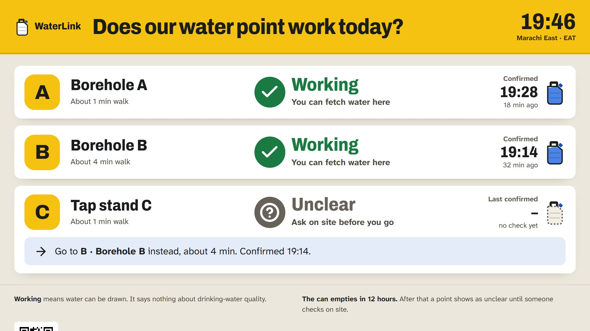
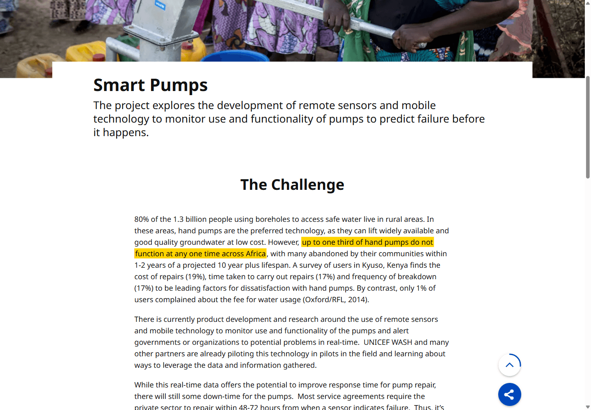
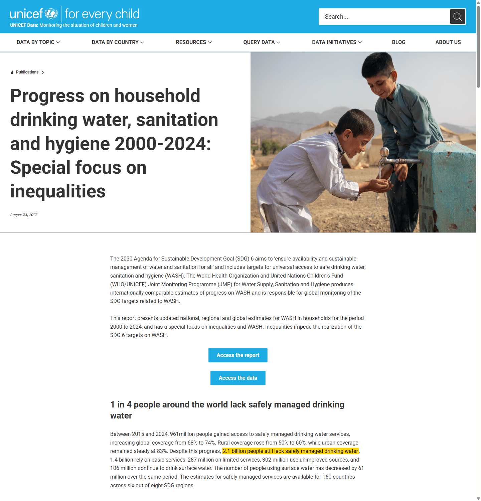
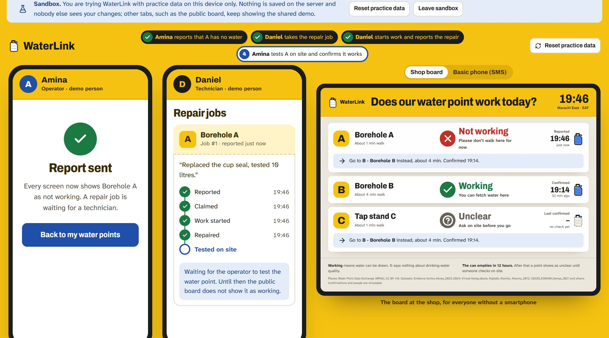
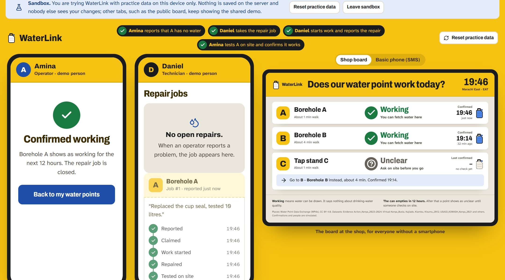

WaterLink
Does our water point work today?
The last confirmed state of every water point before people walk, and a repair that only counts once the pump is tested on site.

Does our water point work today?
The last confirmed state of every water point before people walk, and a repair that only counts once the pump is tested on site.

WaterLinkThis is not history. UNICEF reports that up to one in three hand pumps does not work at any one time across Africa, and the WHO/UNICEF report of 25 August 2025 counts 2.1 billion people without safely managed drinking water. In Kenya’s public data the newest survey is from November 2024, so nobody can see today which pump works.


WaterLink


Live and working end to end: board and household view (English, Kiswahili draft), report → job → blockers → repair → test, history, route and access checks, SMS simulation, a replay of real 2014 pump data, practice mode without login. 85 unit and 37 browser tests run on every push. Places come from real surveys (WPdx); people, confirmations and routes are simulated and labelled so.
WaterLink39,959 survey records for Kenya. The newest is from 30 Nov 2024, the median is 5.7 years old, 21% did not work at the last visit (27% in Busia).
| Assumption | Evidence | Status |
|---|---|---|
| Families cannot learn today’s state | Newest of 39,959 Kenyan records: 30 Nov 2024; median 5.7 years old (WPdx, our calculation). | Supported |
| Many points are broken at any time | Up to 1 in 3 hand pumps in Africa (UNICEF); 21% of Kenyan records non-functional at the last visit. | Supported |
| Waiting for repairs hurts | Kyuso, Kenya: repair cost 19%, repair time 17% and breakdowns 17% top the complaints; 2–3 days without clean water (UNICEF). | Supported |
| An organised repair service works | Kwale and Kitui: downtime from 27 days to under 3 with sensors and a repair service (WASREB 2014). | Other project |
| Households without smartphones can be reached | 48.6% of rural and 64.6% of urban people in Kenya own a mobile phone (Housing Survey 2023/24). | Partly |
| Operators confirm often enough; someone pays | No evidence yet. 12 hours is a demo value. No pilot, no impact claim. | Open |
Sources: Water Point Data Exchange (data.waterpointdata.org, retrieved 22 Oct 2026, our calculation); UNICEF Office of Innovation “Smart Pumps”; WASREB 2014 via REF 2021 impact case study and SDSN TReNDS 2018; Kenya Housing Survey 2023/24 (CA, KNBS).
WaterLinkOne neighbourhood, one partner (a county water office, NGO or maintenance service) and four numbers: fresh confirmations, time to a repair that counts, wasted walks, and whether anyone reads “Working” as “clean water”. Baseline first, targets afterwards.